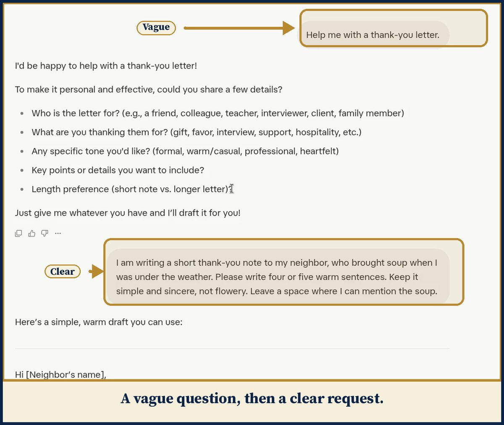
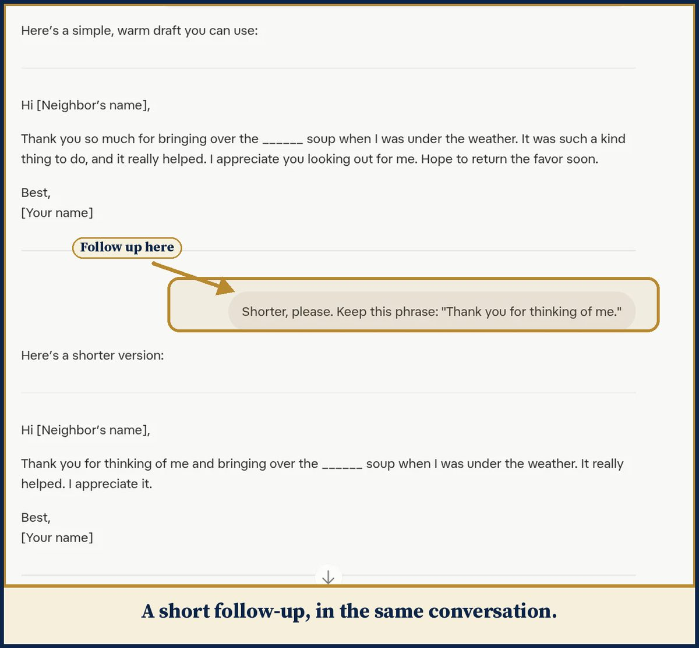

Lesson 1 of 8
Ask so Grok really understands you
Today we will work on one skill: asking so Grok really understands you.
A short, vague question often gets a generic answer. A clear request gives Grok the details it needs to help you well.
If you’re new here
If you have not tried Grok yet, that is all right. Here is the short version:
- Open grok.com in your web browser. That is the program you already use to visit websites.
- Sign in with your email. You do not need an X account.
- Type in the box on the page, then send your request.
The rest of this lesson starts after that. It is about how to ask more clearly, so the answer is more useful.
A simple recipe for a clear request
When I say “request,” I just mean the words you type into the box. You do not need special computer language.
Try to include four things:
- Who you are. A short line is enough, such as “I am writing a thank-you note.”
- What you need. Be specific. “A four-sentence thank-you” is clearer than “help with a letter.”
- For whom. Who will read it, and what is the situation.
- How you want it to sound. Warm, brief, formal, or light.
You can also ask for a length, a tone, and an example. A little context helps. Private details do not. We will come back to that in a moment.
The same task, asked two ways
Here is a thank-you note, first as a vague question, then as a clear request.
Before (vague)
Help me with a thank-you letter.
After (clear)
I am writing a short thank-you note to my neighbor, who brought soup when I was under the weather. Please write four or five warm sentences. Keep it simple and sincere, not flowery. Leave a space where I can mention the soup.
Do you see the difference? The first request leaves Grok guessing. The second one tells Grok who you are, what you need, who it is for, and how it should sound. It also asks for a length.
Here is one more, for a real plan.
Before (vague)
Plan a visit for me.
After (clear)
I am planning a two-day visit to see my sister in Portland, Oregon. We both prefer a slower pace. Please suggest a simple weekend plan with two or three easy things to do, plus one backup if it rains. Write it as a short list I can print.

You can also ask Grok to give you an example first, like this: “Before you write the note, show me one sample sentence in the tone you plan to use.”
How to follow up in the same conversation
You do not have to start over if the first answer is not quite right. Stay on the same page. Type a short follow-up in the same box, under Grok’s answer.
You can say things like:
- Shorter, please.
- Use simpler words.
- Keep this phrase: “Thank you for thinking of me.”
- Make it a little more formal, but still kind.

Useful follow-ups to keep
When you type a request, try to include the four parts of the recipe above. These short follow-ups help after the first answer:
- Shorter, please.
- Use simpler words.
- Keep this phrase: ______________________________
- Give me two versions.
- What might you have gotten wrong?
A little context helps. Private details do not. If you would not put it on a postcard, do not type it in.
A safety note
Context is useful. Passwords, bank details, Social Security numbers, and one-time codes are not. If you would not put it on a postcard, do not type it into Grok.
Grok can help you draft and plan. You stay in charge. If an answer does not look right, you can ignore it or ask again in a different way.
Try it today
Pick one real task. It can be a note, a plan, or a question you have been meaning to ask. Write your request using the recipe above. Send it. Then ask Grok to adjust one thing, such as the length or the tone. Save both versions so you can compare them.